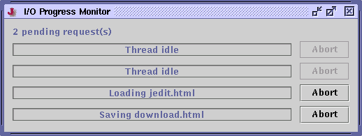

Because blocking the GUI is undesirable while loading or saving buffers, especially if they are stored on a remote server, jEdit executes all I/O operations asynchronously.
When jEdit starts up, it creates a pool of "I/O work threads". By default, four threads are started, which should be enough for most purposes. If you find yourself loading, saving or otherwise manipulating more than four files at the same time, you might want to increase the number of threads in the Loading and Saving pane of the Utilities>Global Options dialog box.
Utilities>I/O Progress Monitor displays a window showing what each I/O thread is doing. Clicking the Abort button next to a progress bar will abort the operation executing in that thread. You will be asked for confirmation first.
Figure 3-5. The I/O Progress Monitor window

View menu bars also embed a miniature I/O monitor.
Figure 3-6. The miniature I/O monitor in the menu bar